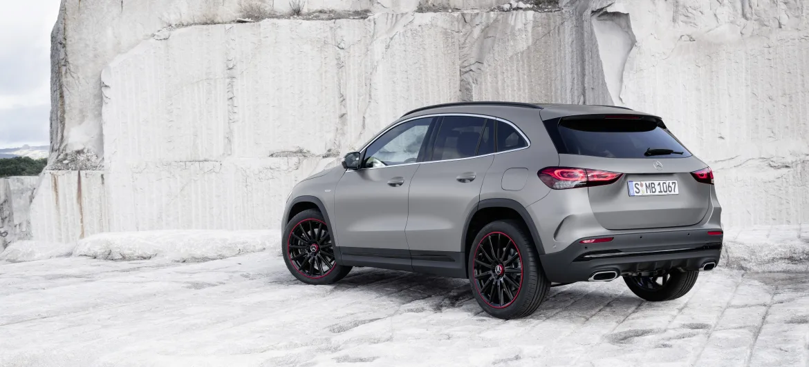

Le nouveau Mercedes GLA affirme son statut de SUV et est doté des dernières technologies de la marque avec notamment l’interface MBUX. Après les Classe A, Classe B et GLB, ce nouveau GLA achève le renouvellement de la gamme des véhicules compacts de Mercedes.
Le GLA de deuxième génération s’apparente davantage à un SUV. En effet, il est désormais plus court de 1,5 cm, mesurant à présent 4,41 mètres, et plus large de 3 cm. Mais le plus impressionnant est sa hauteur qui augmente de plus de 10 cm et atteint désormais 1,61 mètre. Le nouveau GLA profite alors d’une garde au toit nettement plus généreuse qu'auparavant.
Ce nouveau GLA est donc plus typé SUV que son prédécesseur. Il offre ainsi une position de conduite réellement surélevée puisque ses passagers toiseront ceux d’une Mercedes Classe A de 14 cm, et ceux d’une Classe B de 5 cm. Le GLB est la seule compacte qui parvient à rester plus haute que le GLA.
Esthétiquement, les évolutions du petit SUV Mercedes Benz sont légères. La face avant devient plus verticale, les boucliers sont redessinés et les projecteurs ainsi que les feux profitent d’un nouveau dessin plus travaillé et plus moderne.
Bien que le nouveau GLA soit plus court de 1,5 cm par rapport à son prédécesseur, il affiche une habitabilité supérieure aux places arrières avec un espace aux jambes qui progresse de plus de 11 cm. Des adultes pourront s’installer aisément à l’arrière et vous aurez de l’espace pour des sièges enfant.
Le nouveau GLA profite en effet d’un empattement (distance entre les roues avants et arrières) plus grand de 3 cm, ce qui permet d’augmenter l’espace à bord.
Le volume du coffre évolue également et augmente de 14 L pour atteindre 435 litres. De plus, la banquette arrière est fractionnable 40/20/40 et coulissante sur 14 centimètres !
Cette banquette coulissante vous permet de trouver le meilleur compromis entre habitabilité et volume de coffre.
C’est bien la planche de bord du nouveau Mercedes GLA qui profite de la métamorphose la plus visible, avec un aménagement identique à celui des dernières Classe A et Classe B. Nous retrouvons donc l’incroyable combiné 100% numérique composé d’un écran pouvant atteindre 10,25 pouces en guise de compteurs et juste à côté un écran central tactile de 10,25 pouces.
Un affichage tête haute peut venir compléter l'ensemble. On retrouve également le système multimédia MBUX et sa commande vocale très sophistiquée qui réagit dès que l'on prononce les mots "Hey Mercedes".
Sans surprise, le nouveau GLA dispose, de série ou en options, de toutes les dernières technologies que l’on retrouve sur les compactes de Mercedes-Benz. La surveillance d’angle mort est de série et fonctionne même à l’arrêt moteur éteint.
Quand il est doté du Pack Assistance, le GLA dispose du régulateur de vitesse adaptatif et du changement de file automatique lui permettant une conduite semi-autonome sur autoroute comme dans les bouchons.